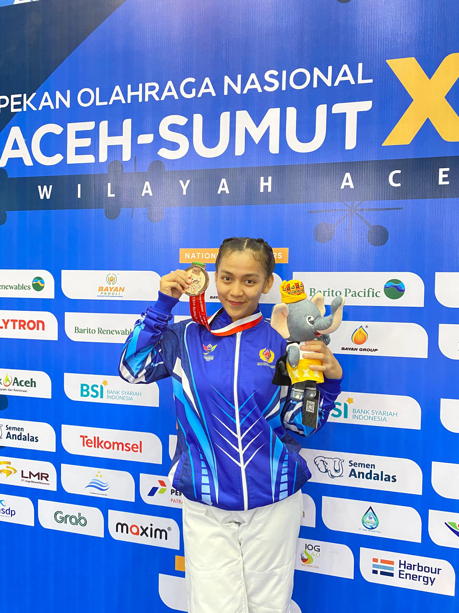
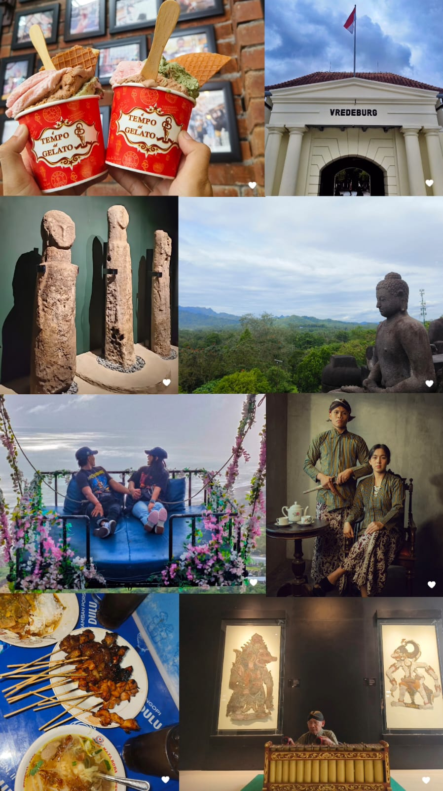

<!DOCTYPE html>
<html lang="id">
<head>
    <meta charset="UTF-8">
    <meta name="viewport" content="width=device-width, initial-scale=1.0">
    <meta name="description"
        content="Profil Putri Dhamma Yanthi, Nama saya putri Dhamma Yanthi dan biasa di panggil pute atau yaya. Saya adalah seorang mahasiswi jurusan Ilmu Komputer di Universitas Yatsi Madani dan saya memiliki pendirian bahwa, Tidak ada Wanita yang lemah & setiap Wanita memiliki hak kuasa atas hidupnya.">
    <meta name="keywords"
        content="Putri Dhamma Yanthi, Universitas Yatsi Madani, Atlet Judo, Desain grafis, Microsoft Office, 2304903, putri uym, uym, putri yatsi, Azra yatsi, putri universitas yatsi madani, putri ilmu komputer 3a, putri yatsi ilmu komputer">
    <meta name="author" content="Putri Dhamma Yanthi">
    <meta name="robots" content="index, follow">
    <meta property="og:title" content=" Putri Dhamma Yanthi - Mahasiswa">
    <meta property="og:description" content="Profil Putri Dhamma Yanthi, mahasiswa Universitas Yatsi Madani dengan keahlian di bidang IT">
    <meta property="og:image" content="tentang saya.jpg">
    <meta property="og:url" content="https://biyaa26.github.io/Website-Yaya/">
    <meta property="og:type" content="website">
    <script type "application/ld+json">
    {
        "@context": "https://schema.org",
        "@type": "Person",
        "name": "Putri Dhamma Yanthi",
        "nim": "2304903",
        "jobtitle": "Mahasiswa IT",
        "description": "mahasiswa Universitas Yatsi Madani dengan keahlian di bidang IT, Desain grafis, dan Microsoft Office, 2304903, Ilmu komputer 3A, universitas yatsi madani, yatsi"
        "url": "https://biyaa26.github.io/Website-Yaya/",

        "address" {
            "@type": "PostalAddress",
            "streetAddress": "Jl. Aria Santika No.40A, RT.001/RW.003, Margasari, Kec. Karawaci, Kota Tangerang, Banten 15114",
            "addressLocality": "Tangerang",
            "addressRegion": "Banten:,
            "postalCode": "15114",
            "addressCountry": "ID"
    },
    "email": "mailto:admin@uym.ac.id",
    "telephone": "(021) 55726558",

        "aggregateRating": {
    "@type": "AggregateRating",
    "ratingValue": "4.5",
    "reviewCount": "25"
  }
},
    <link rel="stylesheet" href="assets/css/main.css">
    <link rel="stylesheet" href="https://www.w3schools.com/w3css/4/w3.css">
    <link rel="stylesheet" href="https://fonts.googleapis.com/css?family=Montserrat">
    <link rel="stylesheet" href="https://cdnjs.cloudflare.com/ajax/libs/font-awesome/4.7.0/css/font-awesome.min.css">
    <title>Portofolio Putri Dhamma Yanthi</title>
    <title>Selamat datang di portofolio Yayaa!</title>
    <link rel="stylesheet" href="styles.css">
</head>
<body>
    <header>
        <div class="container">
            <h1>Putri Dhamma Yanthi</h1>
            <nav>
                <ul>
                    <li><a href="#about">Tentang</a></li>
                    <li><a href="#projects">Aktivitas</a></li>
                    <li><a href="#contact">Kontak</a></li>
                </ul>
            </nav>
        </div>
    </header>

    <section id="about">
        <div class="container">
            <h2>Tentang Yayaa</h2>
            
            <p>Nama saya Putri Dhamma Yanthi dan biasa di panggil Pute atau Yayaa. Saya adalah seorang mahasiswi jurusan Ilmu Komputer di Universitas Yatsi Madani dan saya juga seorang atlet Judo Kota Tangerang. Saya memiliki pendirian bahwa " Tidak ada Wanita yang Lemah & Setiap Wanita memiliki hak kuasa atas hidupnya.</p>
        </div>
    </section>

    <section id="projects">
        <div class="container">
            <h2>Aktivitas Yayaa</h2>
            <div class="project-card">
                
                <h3>Prestasi</h3>
                <p>Pada tahun ini lebih tepatnya bulan November, saya mendapatkan kesempatan untuk mengikuti ajang bergengsi di negara kita. Ini adalah sebuah moment yang sangat berharga dalam hidup saya selama saya mengikuti beladiri JUDO. Saya baru pertama kali mengikuti PON Aceh-Sumut dan saya sangat bersyukur karna saya bisa membanggakan provonsi Banten dengan membawa pulang medali Perunggu di kategori Ju-No-Kata Putri atau bisa di bilang nomor ganda Putri.Saya berharap dengan menjadi juara di kejuaran bergengsi ini bisa menjadi motivasi saya untuk persiapan di kejuaran yang akan datang.</p>
            </div>
            <div class="project-card">
                
                <h3>Skill</h3>
                <p>Di bidang komputer saya menguasai beberapa aplikasi desain. Bidang kesenian saya bisa menari, membatik dan membuat beberapa kerajinan tangan. Di bidang memasak, saya bisa membuat kue dan bisa memasak apapun sesuai mood dan perut saya.</p>
            </div>
            <div class="project-card">
                
                <h3>Hobi</h3>
                <p>Saya sangat suka Traveling & Kulineran. Biasanya saya melakukan itu bersama keluarga saya. Tetapi semnjak saya berpacaran dengan abil, saya merasa sangat senang karena kita memiliki kesamaan. Beberapa waktu yang lalu saya mengunjungi Daerah Istimewa Yogyakarta dan di temani oleh orang yang spesial yaitu Abil ♡. Kami mengunjungi banyak desitinasi wisata dan mencicipi makanan khas Yogyakarta.
                </p>
            </div>
        </div>
    </section>

    <section id="contact">
        <div class="container">
            <h2>Kontak</h2>
            <p>email: <a href="mailto:bingyacontoh@email.com">bingyacontoh@email.com</a></p>
            <p>Instagram: <a href="dmto:@ruangbingyaaaaa">@ruangbingyaaaaa</a></p>
        </div>
    </section>

    <footer>
        <div class="container">
            <p>&copy; 2024 Putri Dhamma Yanthi.</p>
        </div>
    </footer>
</body>
</html>
